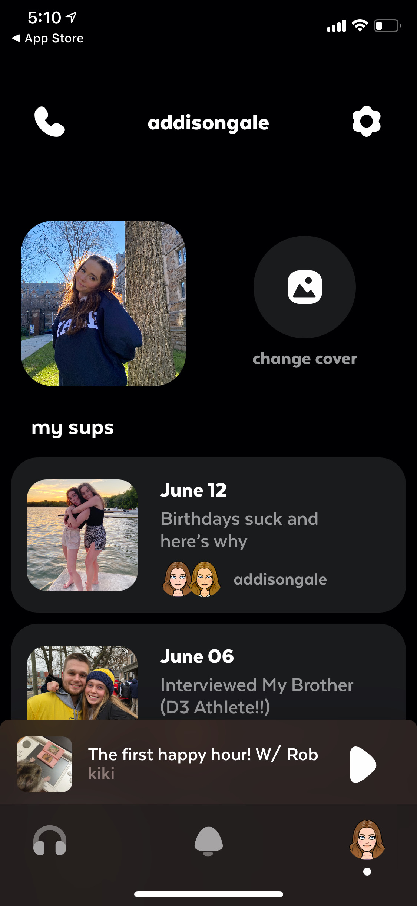
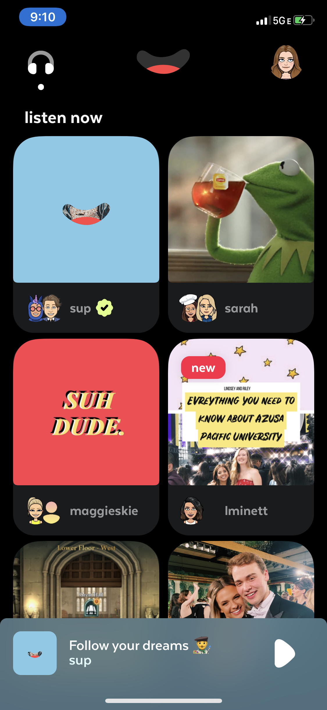

sup by episode 8. Startup Work
App User Interface
Summer 2020 I worked as an intern at a start-up tech company, episode 8, Inc., with the marketing team that was creating a new podcast app. As a member of the team, I presented research findings and recommended solutions to proposed challenges. With my team, I also had the opportunity to give feedback and help design some of the interfaces of the app. Based on consulting with my team, we ideated solutions for different problems the user was having with the app. This is one of the interfaces in specific that I helped design.
Question of the Day
When recording your mini podcast with your friend if you needed an icebreaker or a topic of discussion, we provided questions of the day to possibly discuss in your new podcast.

MySpace Best Friend Inspiration
We took inspiration from MySpace and used a similar “Top 8” friends feature in listening to others' podcasts. You can switch out who your top podcasters are to refresh your feed.
HP Inc. Work
Early Evaluators Program
I oversaw the early evaluators program for three platforms and shipped these products to over 200+ customers, including brands such as Chick-Fil-A, Nordstroms, and Mayo Clinic. EEP helps promote the products to customers before launch and helps drive interest in our products. I was in charge of communications between customers, prioritized customers on the ship list, created evaluator guides to give more information per product, and created surveys to provide feedback.
Sustainability Analysis
This summer, within the retail business unit, I worked closely with sustainability experts. I made a sustainability dashboard via Power BI to see if retail was on track to meet our recycled plastic goals. I led a sustainability prediction analysis on our recycled plastic goals for the next ten years. I presented this analysis at an executive level to inform whether we are on track or not on track for our sustainability goals. One of my most significant lasting impacts from this project is that my findings and analysis template are used in other business units to evaluate their sustainability goals.
Business Use Cases
I created vertical use case-specific customer slides for our sales team to present to customers. I made vertical use case slides for retail, hospitality, and healthcare. Although hospitality and retail are critical, our team recently saw a huge opportunity to move into banking and healthcare, so I collaborated with experts on the business development team to sell and promote our product to those specific customers.